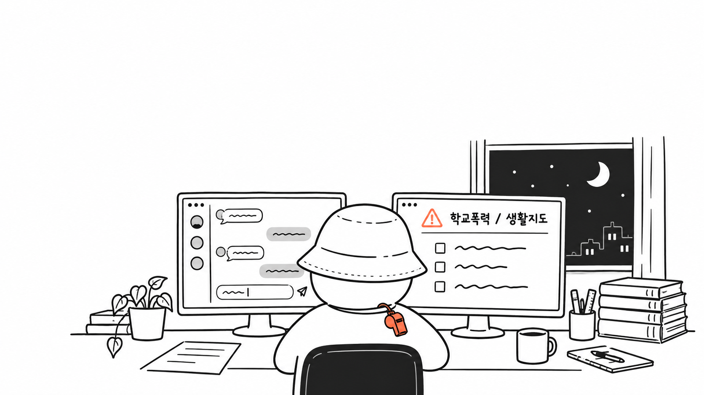

새벽에 글 하나를 읽었다. 다 읽고 나서도 한참을 그대로 앉아 있었다.
쓴 사람은 펠릭스 리제버그. AI 회사 앤트로픽에서 Claude를 만드는 사람이다. 그는 AI를 만드는 사람들끼리 "우리는 아직 충분히 야심차지 않다"는 말을 자주 한다고 했다. 그런데 그 말은 하기는 쉽고 따르기는 어렵다고, 그래서 따라 할 수 있게 써 보겠다고 했다. 글 제목이 '더 야심차게 쓰는 법'이었다.
그는 AI를 쓰는 방향을 네 가지로 나눈다. 속도, 높이, 깊이, 범위. 속도는 같은 일을 더 빨리 끝내는 것. 높이는 지금 하는 일에서 한 걸음 물러나, 그 일이 결국 무엇을 위한 것인지 묻는 것. 깊이는 그 분야 최고 전문가가 하듯 날것의 자료에서 시작해 끝까지 확인하는 것. 범위는 다른 분야의 눈을 빌려 지금 문제를 다시 보는 것.
챗GPT가 처음 나왔을 때부터 AI를 썼다. 처음엔 세특 문장을 다듬는 정도였고, 무언가를 만들기 시작한 건 그보다 한참 뒤였다. 대진표를 짜고, 작전판을 만들고, 평가표를 정리했다. 꽤 많은 것을 만들었다고 생각했다.
어려운 말은 하나도 없었다. 그런데 네 가지가 하나같이, 내가 AI에게 한 번도 하지 않은 질문이었다. 나는 늘 만들어 달라고만 했다. 이 일이 무엇을 위한 것인지, 전문가라면 어디서부터 시작할지, 다른 눈으로 보면 무엇이 보일지는 묻지 않았다. 묻지 않았으니 AI도 답한 적이 없었다.
나는 AI가 할 수 있는 일을 묻지 않고,
내가 할 줄 아는 일만 시키고 있었다.
뒤통수를 맞은 것 같았다. 누가 틀렸다고 한 것도 아닌데, 내가 생각조차 하지 않았던 것을 남이 아무렇지 않게 말하고 있었다.
그 새벽, 내가 AI로 만든 것들을 저 네 가지에 하나씩 비춰 보기로 했다. 무엇을 묻지 않았는지 적어 보려고.
리제버그는 속도를 설명하지 않는다. 같은 일을 더 빨리 하는 것, AI가 돈이 되는 가장 기본적인 쓰임이고, 너무 잘 알려져 있어서 건너뛰겠다고 한 줄로 넘어간다.
나는 그 한 줄에서 오래 멈췄다. 그가 건너뛴 그 칸에, 나는 꽤 오래 머물러 있었기 때문이다.
내가 AI로 한 일은 대부분 속도였다. 세특 문장을 다듬고, 수행평가 점수를 입력하고, 긴 공문을 요약하고, 복잡한 내용을 표로 정리했다. 피구대회 심판 등록부를 만들었고, 복식 대진표를 짰다. 하나하나는 전부 내가 할 줄 아는 일이다. AI가 없었어도 했을 일이고, 다만 밤이 길어졌을 뿐이다.
속도는 아무것도 묻지 않아도 되는 유일한 칸이다. 시키기만 하면 된다.
그렇다고 속도가 가벼운 건 아니다. 계획서와 평가표와 안내문이 끝없이 이어지는 학교에서, 덜어 낸 시간은 수업을 한 번 더 생각할 시간이 되고 아이 이야기를 조금 더 들을 시간이 된다. 다만 아낀 시간이 실제로 어디로 갔는지는 자신 있게 말하지 못하겠다. 자료 하나가 빨리 끝나면 다음 자료를 만들었다. 표가 쉽게 나오니 기준을 하나 더 넣었다. 편해진 만큼 일을 더 했다.
일을 빨리 끝내는 것과,
그 일을 제대로 하는 것은 다른 문제였다.
다음엔 표 하나가 끝나면 바로 다음 표로 넘어가기 전에, 한 번만 물어보려 한다. 이 표는 결국 누구에게, 무엇을 하게 하려는 걸까.
그 질문이 리제버그의 두 번째 칸, 높이였다.
리제버그는 자기 이야기로 높이를 설명한다. 처음엔 AI에게 프로그램의 오류 하나를 고쳐 달라고 했다. 그러다 어느 날부터는 오류 하나가 아니라, 프로그램이 오류 없이 돌아가도록 지켜 달라고 했다. 일 하나가 아니라 그 일들이 모여서 이루려는 것을 맡긴 것이다. 그는 이렇게 묻는다. 그다음에 무슨 일이 일어나길 바라는가. 목표 너머의 목표는 무엇인가.
내 수업으로 옮겨 본다. 내가 지금 하고 있는 수업에서 가르치고 싶은 것은 하나다. 공간을 보는 눈. 축구에서 멋진 골보다, 득점에는 실패했어도 빈 공간을 보고 넣어 준 스루패스의 그 기점. 그걸 알아보는 눈을 아이들에게 주고 싶었다.
나는 수업에 부제를 붙인다. 작년 농구의 부제는 스텝이었다. 공을 넣는 기술보다 앞으로 나아가는 발이 먼저라고 생각해서였다. 올해 플래그풋볼의 부제는 공간이다. 작전판을 만든 것도 그래서였다.
작전판은 6월부터 생각했다. 처음 만든 판은 한 번 갈아엎었다. 수업을 준비하고, 수업을 하면서 판이 무엇을 보여 줘야 하는지가 점점 또렷해졌다. 다시 만든 판은 하나만 보여 준다. 수비가 리시버를 늦게 따라가면 공간이 생긴다는 것. 아이들이 처음 당구를 치고 나서 당구대를 떠올리며 3쿠션을 상상하듯, 이렇게 움직이면 공간이 생기겠구나를 즐겁게 상상하게 만들고 싶었다.
그런데 AI에게는 뭐라고 했나. "작전판을 만들어 줘"였다.
리제버그의 이야기를 다시 읽다가 거기서 멈췄다. 작전판을 만들어 달라는 말은, 오류 하나를 고쳐 달라는 말과 같은 높이에 있었다.
공간을 보게 하려면 어떻게 해야 하느냐고,
나는 한 번도 묻지 않았다.
그게 잘못인지는 아직 모르겠다. 그 질문을 통째로 AI에게 넘기는 게 교사가 할 일인지, 나는 확신이 없다.
다만 한 가지는 안다. 올해 아이들은 긴 패스가 어려우니 속임수 작전을 많이 쓴다. 그게 실제 경기에서 먹히는 날이 있다. 그런데 같은 작전을 작전판에 올리면 5야드도 못 가서 아이들이 속상해한다. 판이 아이들을 따라가지 못하는 것이다. 화면에서 잘된 작전이 운동장에서 통하는 게 아니라, 운동장에서 통한 것을 화면이 따라와야 한다는 걸 아이들이 가르쳐 줬다.
다음엔 판을 고쳐 달라고 하기 전에, 먼저 이렇게 물어보려 한다. 운동장에서 통한 작전이 판에서는 왜 안 통할까. 아이들이 공간을 보게 하려면, 이 판은 무엇을 보여 줘야 할까.
리제버그는 깊이를 이렇게 말한다. 더 크게 말고, 더 깊게. 그가 자주 쓴다는 질문이 있다. 이 분야 최고 전문가라면 내가 묻지 않은 무엇을 하겠는가. 누가 정리해 준 것 말고, 어떤 날것의 자료에서 시작하겠는가. 그리고 이 결과가 맞다는 것은 무엇이 보여 주겠는가. 마지막 질문에 그는 하나를 못 박는다. 그 답이 AI 자신이어서는 안 된다고.
이 질문을 읽다가 평가지 하나가 떠올랐다. 피클볼 첫해에 만든 경기 평가 체크리스트다. 항목이 많았고, 보기에는 훌륭했다. 그 종이를 들고 코트에 나가 보니, 종이를 다 채우려면 정작 아이들을 볼 틈이 없었다. 그 이야기는 지난 글에서 했으니 여기서는 하나만 덧붙인다.
그 평가지가 재는 것이 내 목표가 맞느냐고, 나는 누구에게도 묻지 않았다. AI에게도, 나 자신에게도. 최고 전문가라면 항목을 만들기 전에 그것부터 물었을 것이다.
그 평가지는 AI와 상관없이 내가 만든 것이다. 그런데 AI였다면 더 빨리, 더 촘촘하게 만들어 줬을 것이다. 항목은 더 늘었을 것이다. 그리고 "좋은 평가표입니다"라고 했을 것이다.
묻지 않으면 AI는
틀린 평가지를 더 잘 만들어 준다.
리제버그가 말한 바깥은 교사에게는 아이들이다. 좋은 평가표가 곧 좋은 평가는 아니었고, 그걸 알려 준 건 아이들이었다.
다음 평가지를 만들 땐, 항목부터 달라고 하지 않고 먼저 물어보려 한다. 이 평가지가 재는 것이 내가 가르친 것과 같은가. 그게 맞는지는 무엇으로 확인할 수 있는가.
깊이에는 다른 쪽 이야기도 있다. 생활안전부장으로서 나는 학생 면담을 녹음한다. 녹음기를 책상 위에 두고, 교사를 지키기 위한 것이라고 먼저 설명하고, 그날 서류로 남긴다. 그리고 요즘은 그 녹취록을 AI에게 읽힌다. 아이가 말하지 않은 것을 읽어 보려고.
리제버그의 말대로라면 녹취록은 가장 날것의 자료다. 그런데 여기엔 바깥이 없다. AI가 "이 아이는 이런 상태로 보인다"고 했을 때 그게 맞는지를 무엇이 보여 주나. 코트에서는 아이가 빈 곳으로 뛰면 보이는데, 마음은 그런 증거가 없다.
그리고 내가 늘 말해 온 것이 있다. 사안의 목적은 피해 학생의 회복이지 학생 분석이 아니다. 녹취록을 읽히는 일이 깊이인지, 넘지 말아야 할 선인지, 나는 아직 모르겠다.
아이에게 물어야 할 것을, AI에게 묻고 있는 건 아닌가.
리제버그는 범위를 넓히는 방법으로 오래된 요령 하나를 소개한다. 명사를 동사로 바꿔 보라는 것이다. 분기 보고서는 '발표 자료'가 아니다. '바쁜 사람들이 30분 안에 원인과 결과를 믿고 결정하게 만드는 일'이다. 동사로 바꾸면 그 일에 어떤 분야가 필요한지가 보인다고 했다. 그리고 하나를 당부한다. 그 분야 사람처럼 말하게 하지 말고, 그 사람이 실제로 하는 일을 하게 하라고.
나도 해 봤다. 조 편성은 '명단 나누기'가 아니었다. '아이들이 서로에게 공을 주고받게 만드는 일'이었다. 그렇게 쓰고 나니, 내가 그동안 체육교육학 말고도 다른 분야의 일을 하고 있었다는 게 보였다.
올해 플래그풋볼 첫 시간들, 아이들은 미식축구를 해 본 적이 없으니 무작정 패스만 수십 번 던졌고 수비는 밀고 잡고 당기는 핸드볼이 되어 갔다. 패스 연습을 더 시킨다고 될 일이 아니었다. 규칙을 바꿨다. 전방 패스를 없애고, 플래그가 뽑히면 그 자리에 서고, 수비는 1대1로. 그다음 시간에 전방 패스를 딱 한 번 열었다. 어떤 규칙이 누구에게 기회를 주는지 묻는 것, 그건 게임 디자인이 하는 일이다.
복식 대진표에는 원칙이 하나 있다. 같은 친구와는 한 번만 짝이 된다. 플래그풋볼 팀을 짤 때는 여학생이 한 팀에 최소 두 명은 들어가게 했다. 반에서 잘 어울리지 못하는 아이가 보이면, 먼저 손을 내밀 만한 아이와 같은 조가 되도록 조건을 짰다. 누가 누구와 같은 조여야 하는지 아이들을 보고 읽는 것, 그건 사회심리학이 하는 일이다.
범위는 체육교사가 이미 몸으로 하고 있는 일이었다. 나만 그런 게 아닐 것이다.
그런데 AI에게는 "이 조건으로 짜 줘"라고만 했다. 조건은 내가 정했고, AI는 그걸 코드로 옮겼다. 그 아이에게 왜 공이 가지 않는지, 게임 디자이너와 사회심리학자라면 무엇을 보겠느냐고 물어본 적은 없다.
묻는 것과 시키는 것은
다른 일이었다.
다음엔 조건을 건네기 전에 먼저 물어보려 한다. 이 반에서 그 아이에게 공이 가지 않는 이유를, 게임 디자이너라면 무엇에서 찾을까. 사회심리학자라면 무엇을 먼저 볼까.
여기까지 쓰고 나니, 묻기만 하면 될 것 같다. 작전을 되묻고, 평가를 되묻고, 다른 분야의 눈까지 빌릴 수 있으니.
그런데 리제버그의 글에서 내가 따라갈 수 없는 대목도 있었다. 그는 높이를 올리다 보면 사람이 일일이 끼어들지 않아도 되는 흐름이 생긴다고 했다. 그리고 이 모든 야심에는 AI가 필요한 자료에 마음껏 닿을 수 있어야 한다는 조건이 붙는다고 했다. 프로그램이라면 그렇다. 교실은 다르다. 아이들의 자료는 마음껏 넘길 수 없고, 교실에서 교사가 빠지면 그건 더 이상 수업이 아니다.
한 아이가 경기 내내 공을 피했다고 하자. AI는 기능 부족, 자신감, 팀 안의 역할을 원인으로 내놓을 것이다. 도움이 되는 가설들이다. 그러나 그 아이가 어제 어떤 일을 겪었는지, 오늘 아침 친구와 무슨 말을 주고받았는지는 모른다. 나도 다 알지는 못한다. 그래서 묻고, 듣고, 지켜본다.
AI는 학생을 모른다.
나도 다 알지는 못한다.
내가 AI로 작전 백 개를 만들어도 아이가 화살표만 따라 뛴다면, 전술을 스스로 판단하는 힘이 자랐다고 말할 수 없다. 반대로 단순한 경기 하나에서 아이가 빈 공간을 발견하고 다음 움직임을 바꿨다면, 그 수업에는 배움이 있었을 것이다. 교사가 AI로 더 많은 일을 할 수 있게 되는 것과, 아이들의 배움이 깊어지는 것은 다르다. 내가 마음을 두고 싶은 것은 두 번째다.
이것은 AI가 부족하다는 말이 아니다. 내가 놓으면 안 되는 일이 무엇인지 확인하는 일에 가깝다.
경기 내내 공을 피한 아이에게 다가가 말을 거는 일. 녹취록을 AI에게 넘기기 전에, 그 아이가 앞에 앉아 있던 모습을 먼저 떠올리는 일. 누구를 같은 조에 넣을지 정하기 전에, 그 반 아이들이 서로 어떻게 지내는지 한 번 더 보는 일. 점수를 적기 전에, 그 아이가 지난번보다 무엇이 달라졌는지 기억해 내는 일.
AI는 그 일을 도와줄 수는 있어도 대신해 주지는 못한다. 그 일만큼은 내 손에서 놓고 싶지 않다.
리제버그는 글 끝에서 왜 이런 글을 썼는지 털어놓는다. 사람은 자기가 가능하다고 믿는 만큼만 해낸다는 것이다.
그가 든 예 가운데 하나는 체육교사라면 다 아는 이야기다. 1954년 5월, 로저 배니스터가 1마일을 4분 안에 뛰었다. 수십 년 동안 아무도 넘지 못하던 벽이었다. 그런데 그가 혼자였던 기간은 고작 46일이었다. 벽은 누군가 한 번 넘고 나자 낮아졌다. 올봄 런던에서는 마라톤 2시간의 벽이 깨졌고, 같은 경기에서 2위도 그 벽을 넘었다.
그 대목에서 다시 뒤통수를 맞았다. 운동장에서는 아이들이 벽을 넘는 걸 늘 보면서, AI 앞에서 나는 넘어 보기도 전에 벽을 정해 두고 있었다. 내가 할 줄 아는 것까지만.
나에게도 시작하지 못한 수업들이 있다. 시간이 많이 들어서, 잘 모르는 분야라서, 혼자서는 어렵다고 여겨서. 그때는 제약이라고 생각했던 것들 중 몇 가지를 이제는 다시 꺼내 볼 수 있을 것 같다.
그렇다고 AI를 많이 쓰는 교사가 더 좋은 교사라는 뜻은 아니다. 아이를 오래 지켜본 교사의 짧은 한마디가 복잡한 프로그램보다 정확할 때가 있다. 오늘 연수에서 "다 됩니다"라고 말씀드린 사람이 이렇게 쓰는 것이 이상하게 들릴지도 모르겠다. 하지만 둘 다 사실이다.
그래서 나는 '야심차게'라는 말을 쉽게 쓰지 못하겠다. 영어의 ambitious는 더 멀리 가 보려는 마음에 가까운데, 한국어의 야심은 때로 남보다 앞서려는 마음처럼 들린다. 영어로 읽은 것을 우리말로 옮기면서 가장 오래 걸린 단어였다. 리제버그의 뜻과 어긋난 곳이 있다면 내 탓이다. 내가 붙잡고 싶은 뜻은 이렇다. 더 좋은 수업을 해 보고 싶다는 마음. 그리고 내가 해 온 방법이 전부는 아닐 수 있다는 생각. 이 둘을 같이 갖는 일.
AI에게 무엇을 시킬 수 있는지보다 먼저, 내가 교육적으로 중요하다고 믿으면서도 아직 해 보지 못한 것이 무엇인지 묻고 싶다. 내가 생각해 온 것을 AI에게 조금은 물어봐도 되지 않을까 하는 생각이 처음으로 들었다.
묻지 않았던 것들을, 이제야
묻기 시작했다.